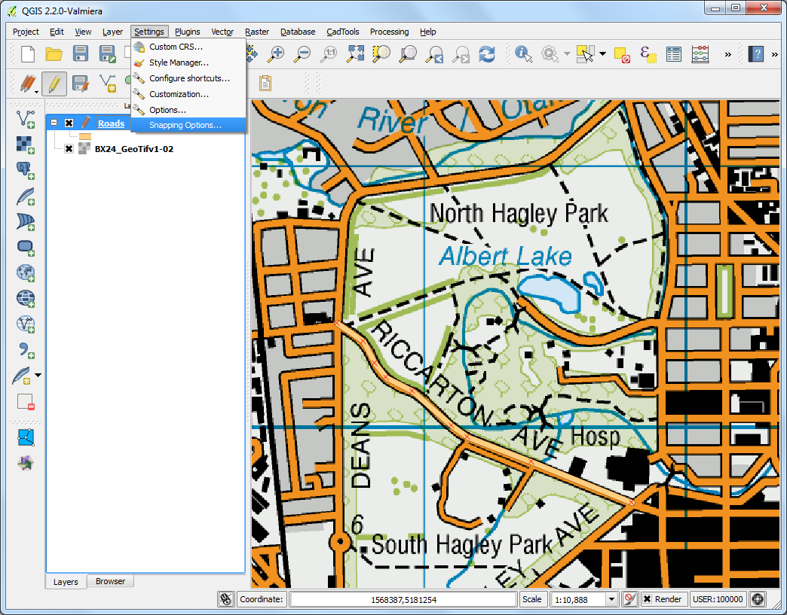
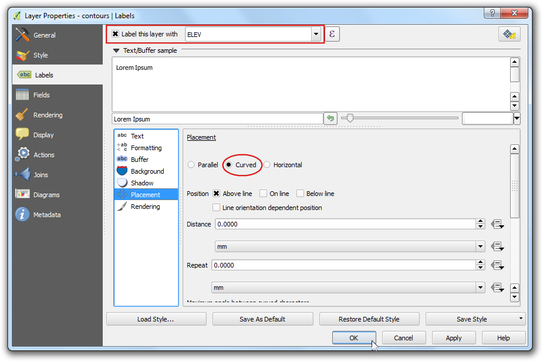

Оцифровка картографических данных
Оцифровка является одной из наиболее распространенных задач, с которыми сталкивается ГИС-специалист. Часто большая доля времени работы в ГИС тратится на оцифровку растровых данных, чтобы создать векторные слои для дальнейшего анализа. QGIS имеет мощные экранные возможности для оцифровки и редактирования, которые мы будем изучать в этой статье.
Обзор задачи
Мы будем использовать растровую топографическую карту для создания нескольких векторных слоев, отображающих объекты в окрестностях парка.
Методика
Выберите пункт . Найдите загруженный файл BX24_GeoTifv1-02.tif и нажмите кнопку Open.

Это большой растровый файл, и можно заметить, что при масштабировании или сдвиге отрисовка карты занимает некоторое время. QGIS предлагает простое решение для существенного ускорения загрузки растров, используя пирамиды изображений. QGIS создает предобработанные фрагменты изображения в разных разрешениях, и они используются вместо полного растра. Благодаря этому навигация по карте становится быстрой и отзывчивой. Щелкните правой кнопкой мыши на слое BX24_GeoTifv1-02 и выберите пункт Properties.

Выберите вкладку Pyramids. Удерживая клавишу Ctrl, выберите все разрешения, предложенные на панели Resolutions. Оставьте остальные опции без изменения и нажмите Build pyramids. Когда процесс будет завершен, нажмите OK.

Вернувшись в главное окно QGIS, используйте инструмент Zoom, чтобы найти район Хэгли-парк в городе Крайстчерч. Это парк, который мы будем оцифровывать.

Перед началом работы нам нужно установить настройки оцифровки. Перейдите к пункту .

Выберите вкладку Digitizing в диалоговом окне Options. Установите для режима прилипания Default snap mode значение To vertex and segment. Это позволит прилипать к ближайшей вершине или сегменту. Я также предпочитаю устанавливать порог прилипания Default snapping tolerance и радиус поиска для редактирования вершин Search radius for vertex edits в пикселях, а не в единицах карты. Это гарантирует, что расстояние прилипания не будет зависеть от масштаба. В зависимости от разрешения вашего монитора, вы можете указать подходящее значение. Нажмите OK.

Теперь мы готовы приступить к оцифровке. Сначала мы создадим слой дорог и оцифруем дороги вокруг парковой зоны. Выберите . Вместо этого вы можете выбрать для создания New Shapefile Layer..., если вы предпочитаете этот формат. Spatialite - это открытый формат базы данных, аналогичный базе геоданных ESRI. База данных Spatialite хранится в одном файле на вашем жестком диске и может содержать разные типы пространственных (точечных, линейных, полигональных) слоев, а также не-пространственные слои. Это позволяет гораздо проще перемещать данные, по сравнению с кучей shape-файлов. В этом руководстве мы создадим пару полигональных слоев и линейный слой, так что база данных Spatialite подойдет лучше. Вы всегда можете загрузить слой Spatialite и сохранить его как shape-файл или в любом другом желаемом формате.

В диалоговом окне New Spatialite Layer нажмите кнопку ... и сохраните новую базу данных Spatialite под названием nztopo.sqlite. Укажите Layer name Roads и выберите Line как Type. Базовая топографическая карта находится в системе координат EPSG:2193 - NZGD 2000, так что мы должны выбрать ту же СК для нашего слоя с дорогами. Поставьте галочку в поле Create an autoincrementing primary key. Это создаст поле под названием pkuid в таблице атрибутов и присвоит уникальный числовой идентификатор автоматически каждому объекту. При создании ГИС-слоя вы должны определиться с атрибутами, которые будет иметь каждый объект. Поскольку это слой дорог, у нас будет два базовых атрибута: название и класс. Введите Name в поле Name атрибута в секции New attribute и нажмите Add to attribute list.

Аналогично, создайте новый атрибут “Class” типа Text data. Нажмите OK.

После того, как слой загрузится, нажмите на кнопку Toggle Editing чтобы перевести слой в режим редактирования.

Нажмите кнопку Add feature. Щелкните на карте для добавления новой вершины. Добавляйте новые вершины вдоль участков дорог. Завершив оцифровку участка дороги, щелкните правой кнопкой мыши для завершения объекта.
Примечание
Вы можете использовать колесо прокрутки мыши для приближения или отдаления в процессе оцифровки. Вы также можете нажать колесо прокрутки и двигать мышь, чтобы сдвинуть карту.

После того, как вы нажмете правую кнопку мыши для завершения объекта, возникнет всплывающее диалоговое окно Attributes. В нем вы можете ввести атрибуты только что созданного объекта. Так как поле pkuid является автоматически возрастающим, вам не удастся ввести его значение вручную. Оставьте его пустым и введите название дороги так, как оно отображается на топографической карте. Вы также можете ввести значение класса дороги. Нажмите OK.

Стиль по умолчанию для нового линейного слоя - тонкая линия. Давайте изменим его для того, чтобы мы могли лучше видеть оцифрованные объекты на карте. Щелкните правой кнопкой мыши на слое с дорогами и выберите Properties.

Выберите вкладку Style в диалоговом окне Layer Properties. Выберите стиль с более толстыми линиями, такой как Primary из предопределенных стилей. Нажмите OK.

Теперь вы явно увидите оцифрованный участок дороги. Нажмите Save Layer Edits чтобы сохранить новый объект на диск.

Перед тем как мы будем оцифровывать оставшиеся дороги, важно обновить некоторые другие настройки, которые важны для создания слоя без ошибок. Перейдите в меню .

В диалоговом окне Snapping Options включите опцию Enable topological editing. Эта опция гарантирует, что общие границы в полигональных слоях будут сохранены корректно. Также отметьте пункт Enable snapping on intersection, который позволяет вам примыкать к пересечениям фонового слоя.

Теперь вы можете нажать кнопку Add feature и оцифровать остальные дороги вокруг парка. Не забудьте нажать кнопку Save Edits после добавления нового объекта чтобы сохранить вашу работу. Полезным инструментом, который поможет вам с оцифровкой, является Node Tool. Нажмите кнопку Node Tool.

После того, как инструмент узлов активируется, нажмите на любом объекте, чтобы показать его вершины. Нажмите на любой вершине, чтобы выбрать ее. Выбранная вершина изменит цвет. Теперь вы можете перетащить мышь, чтобы переместить вершину. Это бывает полезно, когда вы хотите внести корректировку после создания объекта. Вы также можете удалить выбранную вершину, нажав клавишу Delete. (Option+Delete на Mac)

Завершив оцифровку всех дорог, нажмите на кнопку Toggle Editing.

Теперь мы создадим полигональный слой, отображающий границы парка. Перейдите к . Выберите базу данных nztopo.sqlite из выпадающего списка. Назовите новый слой Parks. Выберите Polygon как Type. Создайте новый атрибут под названием Name. Нажмите OK.

Нажмите кнопку Add feature и щелкните по карте, чтобы добавить вершины полигона. Оцифруйте полигон, изображающий парк. Убедитесь, что оцифрованные вершины примыкают к узлам дорог, так что нет пробелов между полигонами парка и линиями дорожной сети. Щелкните правой кнопкой мыши, чтобы завершить полигон.

Введите название парка во всплывающем окне Attributes.

Полигональные слои предлоагают еще один очень полезный параметр, называемый Избегать пересечения новых полигонов. Перейдите к . Установите флажок в колонке Avoid Int в строке для слоя Parks. Нажмите OK.

Теперь нажмите на Add feature для добавления многоугольника. С опцией Избегать пересечения новых полигонов, вы сможете быстро оцифровать новый полигон, не беспокоясь о точном примыкании к соседним полигонам.

Щелкните правой кнопкой мыши, чтобы закончить полигон, и введите атрибуты. Волшебным образом новый полигон сокращается и прилипает точно к границе соседних полигонов! Это очень полезно при оцифровке сложных границ, так как можно быть не очень точным, но по-прежнему получить топологически правильные многоугольники. Нажмите Toggle Editing, чтобы закончить редактирование слоя Parks.

Настало время оцифровать слой зданий. создайте новый полигональный слой под названием Buildings перейдя к меню .

После того, как слой Buildings будет добавлен, выключите слои Parks и Roads так, чтобы базовая топографическая карта была видна. Выберите слой Buildings и нажмите Toggle Editing.
Оцифровка зданий может быть трудоемкой задачей. Кроме того, трудно добавлять вершины вручную так, чтобы края были перпендикулярны и образовывали прямоугольник. Мы будем использовать модуль под названием Rectangles Ovals Digitizing, чтобы помочь в этой задаче. См Использование модулей расширения чтобы посмотреть, как искать и устанавливать модули. После того, как модуль Rectangles Ovals Digitizing установлен, вы увидите, что над картой появилась новая панель инструментов.

Приблизьте участок со зданиями и нажмите кнопку Rectangle by Extent. Щелкните и перетащите мышь, чтобы нарисовать идеальный прямоугольник. Аналогичным образом добавьте оставшиеся здания.

Вы заметите, что некоторые здания не вертикальны. Нам нужно будет нарисовать прямоугольник под углом, чтобы соответствовать отпечаткам зданий. Нажмите Rectangle from center.

Нажмите в центре здания и перетащите мышь, чтобы нарисовать вертикальный прямоугольник.

Мы должны повернуть этот прямоугольник, чтобы он соответствовал изображению на топографической карте. Инструмент вращения доступен на панели инструментов Расширенная оцифровка. Щелкните правой кнопкой мыши на пустом месте на панели инструментов и включите панель Advanced Digitizing.

Нажмите кнопку Rotate Feature(s).

Используйте инструмент Select Single feature, чтобы выбрать полигон, который вы хотите повернуть. После того, как инструмент :guilabel:`Rotate Feature(s) активирован, вы увидите перекрестие в центре полигона. Нажмите точно на это перекрестие и перетащите мышь, удерживая левую кнопку. Появится предварительное изображение повернутого объекта. Отпустите кнопку мыши, когда многоугольник совместится с отпечатком здания.

Сохраните правки слоя и нажмите Toggle Editing, как только вы закончите оцифровку всех зданий. Вы можете перетаскивать слои, чтобы изменить их порядок отрисовки.

Задача оцифровка завершена. Вы можете поиграть с настройками стилей и подписей в свойствах слоя, чтобы создать симпатичную карту из данных, которые вы создали.